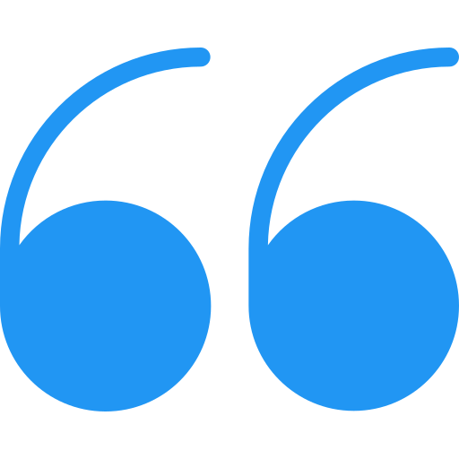

Aquarius is the Fixed stage of the Air element and is ruled by the lunar side of Saturn. This means that Aquarius use Saturn's energy of giving things a final shape to preserve and strengthen (Fixed stage) ideologies and philosophies (Air element). How does one preserve and strengthen something so intangible such as ideologies? Simple: at first, an idea is open and flexible. When it is repeated several times in the same manner, it turns into an opinion; something one can hold on to and other people who did not come up with it can quote. If enough people decide to keep this opinion the way it is, it then turns into a belief. If this belief grows and becomes more complex, it will eventually turn into an ideology such as Marxism, Nationalism, Naturism, etc.
This process of ideological formation is what Aquarius are so interested in. They enter an ideology and make sure that everyone is treated equally by humbling the strong and elevating the weak until everyone is at the same level as Aquarius believe they should be. The beauty is that Aquarius do this all while maintaining their absolute individuality; something they value greatly. The Fixed stage is what makes Aquarius stable, determined, persistent, stubborn, inflexible, and opinionated. The Air element is what makes them great communicators, analytical, curious, intellectual, social, detached, and easy-flowing.
Aquarius's symbol is a man kneeling down and pouring a vessel of water. This symbolizes Aquarius's offering of knowledge and ideas for the benefit of mankind. The water represents the purifying and washing away of the shackles of the past, making room for a fresh, new start. The kneeling represents the humility in which Aquarius offers this knowledge; expecting nothing in return, not even praise.

Aquarius represents the "Second Childhood" or "Rebirth" stage in the Astrological Karmic Cycle. After concentrating solely on selfish accomplishments during the "Old Age" stage of Capricorn, the soul is reborn again in a child-like, curious, and rebellious form that wants to explore and experience EVERYTHING in this world that it could not in the previous stages because of the constricting laws of humanity. Aquarius see no reason to respect laws, traditions, or other rules that were formed by their predecessors since they live in the ever-changing future. To them, it doesn't make sense to adhere to something that is subject to change soon.
Aquarius often knows what will happen before it does and hate explaining to people how they know; mostly because there is no logical explanation for this phenomenon.
In this karmic stage, Aquarius believe that all humans are absolutely equal to one another. If there is a need to form a political party, change laws, or form a rebellion in order to achieve this equality, Aquarius believe it should be done. They believe in breaking the old rules and are very amused when the more conservative people are appalled by their rebellious manner. This reborn soul is also equipped with a new weapon; a strong intuition about the future. Aquarius often knows what will happen before it does and hate explaining to people how they know; mostly because there is no logical explanation for this phenomenon.
Aquarius's life mantra is "I know". They came into this world to teach that "love is tolerance" and to learn that "love is becoming one"; something that Aquarius finds highly difficult due to their natural inclination towards individuality and personal freedom.

Aquarius usually have a medium to tall height; seldom very short. They appear to be very light in physical manner even though they are quite strong. The body outlines of Aquarius are quite angular, yet they moves with great fluency. They have square shoulders, hold their head high and their back straight. Aquarius's most distinguishable features are that everything about them seems cleaner of line, better defined, less blurred, and very fresh. It is almost as if their bodies communicating their futuristic manner. Also, since Aquarius are usually dreaming about the future, there is a vague, dreamy, and distant look in their eyes; something that conveys mysterious knowledge.
In a group, Aquarius will usually be somewhere by their friends; usually concentrating on deeply examining the person in front of them or talking to someone about their ideologies that they are so passionate about. Aquarius are quiet and reserved people that keep to themselves. Their individual and rebellious manners cause them to look or dress differently than others. They will usually wear a distinctive and special article of clothing or accessory, even as insignificant as a pair of colorful socks, just so Aquarius can separate themselves from others.

Aquarius's strong traits are: individuality, tolerance, friendliness (Aquarius are the friendliest of all signs), ingenuity, inventiveness, originality, and genius. Aquarius are great visionaries and often correctly predict the future of mankind, technology, trends, politics, etc. They are obsessed with the future and excel in the latest technologies and gadgets. They have very strong intuition and sixth sense; almost on the verge of ESP.
Aquarius have unmatched concentration abilities to the point where they cannot hear or see anything around them when their mind is immersed in something.
Aquarius have a very calm manner that is seldom disrupted. They have unmatched concentration abilities to the point where they cannot hear or see anything around them when their mind is immersed in something. The ironic thing is that they can tell you exactly what was said at the other side of the room in a different conversation even though they were in deep conversation with the person in front of them. Aquarius have an unquenchable thirst for knowledge and solving mysteries and are willing to sometimes go without sleep for days while trying to solve a problem. They are very attentive and understanding listener.
Aquarius's potential weaknesses are: weirdness, irritability, disconnection from reality, absent-mindedness, and an overall refusal to cooperate. Aquarius is in the far corner of the lunar signs and is of the Air element which makes them cold emotionally. They are friends with all the humans in the world and love everyone equally; a trait that makes it hard for them to achieve emotional intimacy with their closer relationships.

Our good friends the Aquarius (and they truly are everyone's good friends), are not ones to fall into a pit they cannot easily get out of. Born with high intuition, intelligence, creativity, and self-confidence, they can figure their way out of any rabbit hole like the great detective they naturally are. However, these absent-minded professors get so immersed in their latest studies that they literally forget to take care of themselves. Aquarius have a tendency to lose sleep, nutrition, and sometimes hygiene while contemplating a mathematical algorithm, working on a plan for world peace, or inventing a new form of energy. A good advice would be for them to have someone that can look out for their earthly needs or for them to become more aware of this problem as many Aquarius end up hurting themselves badly due to this habit..
Aquarius are quite fond and protective of their personal freedom. This allows them to maintain their individuality and aloofness all while being immersed within multiple groups of people, causes, movements, etc. This characteristic of theirs makes it very difficult to develop intimate relationships. Add to that the fact that to the Aquarius, every human is equal and thus loved equally by them, and what you get is a difficulty in forming and maintaining intimate relationships such as marriage (this is one of the reasons that Aquarius are not running to get married). It would serve the Aquarius well to be aware of this obstacle and be honest with their close friends and loved ones in order for them to be sensitive to the matter and compromise on the amount of freedom and intimacy they have in an intimate relationship.

Aquarius are not a big foodies at all; they would much rather talk than eat. Just like everything in Aquarius lives, if they are already engaged in doing it, it must have a different and diversified twist than the norm. The same goes for Aquarius's taste in clothes. They like to wear something that will allow them to stand out from the rest, such as a bright color or a modern design as if to announce that they are different than everyone.
Although Aquarius love to engage in discussions about humanity, philosophy, psychology, science, etc., they are not ones to argue or force their opinions on others. Aquarius's life motto is "live and let live" and he fights for the freedom of others to have their individual opinion. Aquarius are usually too immersed in their studies, work, causes, etc. to have time for hobbies. If they do find a bit of time, these hobbies will revolve around their element; air. Aquarius like brisk walks, runs, climbing, tennis, driving fast with the top down or anything that allows them to feel and be one with the air. Aquarius also love to have and tinker with new gadgets and other forms of mechanics. They are also a big fan of socializing; there they get to "pick the brains" and closely examine new human behaviors.

Due to Aquarius's love of adventure and investigation of life and human behavior, there are very few things that they dislike or get under their skin. On the contrary, it is when life becomes static, mundane, and not challenging that Aquarius become agitated. Aquarius hate the normal, the narrow-minded, and the mundane. They crave variety in all aspects of life.
Aquarius also dislike the inequality and pompousness that is the natural byproduct of hierarchy, no matter which establishment we are speaking about. In their eyes, all humans are equal and nobody should hold themselves higher than anyone else. Because of this, Aquarius strongly dislike authority and rules that confine them. Injustices and inequalities done to anyone anywhere around the world really bother Aquarius. They also cannot stand wiliness, cunningness, or people who pretend to be what they are not.

Aquarius is a sign that has many, many friends of different walks of life and different friend circles and they enjoy rotating between all of them. They are definitely not one to be tied down in a "best friend forever" relationship with any single person; Aquarius hate being tied down to anything. Furthermore, as much as Aquarius love and crave large social groups and friends, they also need their solitude from time to time and can get very creative in finding ways to sneak away to be alone and contemplate some important matters.
When you meet an Aquarius, it is safe to say that they will begin their examinations of you until they feel that they have explored every aspect of you that interests them. Once they feel they have learned everything they wanted to about you, they might just move on to the next person they wans to "investigate". Don't be offended, it's just their nature. If you wish to keep an Aquarius for longer periods of time, make sure you have some interesting new ideas, gadgets, political or human causes that would interest them; Aquarius would love to chat about it with you.
Aquarius have periods of time when they would like to be alone and anti-social. Don't worry, though, they will be back to their social self soon enough. When planning a meeting with an Aquarius, don't expect to get a set time and place from them; there is very little that is set with their sign. However, if you do manage to get a set time and place, you better make sure you are there on time; Aquarius will be there on the dot. Aquarius is the friend you can share and say anything to; they will not judge you or force their opinions on you. From them, you will receive a listening ear and an understanding mind. However, if you expect to get a very emotional response for your troubles, it is best that you turn elsewhere.
At times when you speak with an Aquarius, you will notice that their mind has wondered elsewhere during your conversation and you may feel that they are not present anymore. Rest assured Aquarius's uncanny concentration abilities allow them to be able to tell you exactly what you said even though their mind actually did wonder elsewhere. It should also be noted that Aquarius also have an ability to know things that are virtually impossible for them to know. Don't bother asking how they know these things, they have no logical explanation for it and it frustrates them to think about it.
Although Aquarius love to examine and research other people's motives and emotions, they are quite candid about their own. Their motives and responses are complex and they are adamant about concealing them just for one purpose; to see others frustrated. Aquarius also possess a very sharp wit and wild imagination which they uses to confuse people.

The Aquarius male is not very a emotional person and greatly values his personal space and freedom. For these two reasons, the Aquarius male is not one to rush into marriage. Even after he has become engaged, the Aquarius male will try and postpone the marriage as much as he can. Spending the rest of his life with the same woman is not something the always versatile and diverse Aquarius looks forward to. However, once marriage is in place, this fine-tuned man makes a lovely husband. The Aquarius husband will explore and examine every whim his wife makes until he knows her every motive and move. He will use this information to be sensitive to his wife's needs and challenges.
The Aquarius husband will explore and examine every whim his wife makes until he knows her every motive and move. He will use this information to be sensitive to his wife's needs and challenges.
However, the wife of an Aquarius should not expect a very emotional and passionate husband, nor should she "bother" him with such "notions". This is also not a man who will shower you with lavish gifts or many compliments. Rest assured, however, that the Aquarius's wife will enjoy a life full of adventure, fun, and romance. Aquarius is looking for a wife who can keep his interest in peek, respects herself, grants him his freedom to pursue his intellectual quests and projects in life, and will take care of the material aspects of the household such as cooking, cleaning, taking care of the children, and finding the misplaced items this nutty professor keeps misplacing.
The female Aquarius is more interested in a man with intellectual and academic achievements as opposed to financial ones. She is looking for a man that will accept her free-flowing manner in life and will be okay with her spending a lot of her time with her friends or on her career. Aquarius is not a sign to be tied down to the house. Both male and female Aquarius are not the jealous types, nor are they passionate lovers.
Free, tolerance, freedom, open-minded, equality, logical, humanity, ideal, unique.

Aquarius's related body parts are the lower part of the legs, which symbolize how Aquarius cause humanity to move forward towards the future. Their lucky color is blue, their lucky stone is sapphire, their lucky number is 11, their lucky day is Saturday, and their lucky metal is cast.


Aries
Mar 20 - Apr 20

Taurus
Apr 21 - May 21

Gemini
May 22 - Jun 21

Cancer
Jun 22 – Jul 21

Sagittarius
Nov 22 - Dec 21

Capricorn
Dec 21 - Jan 20

Aquarius
Jan 20 - Feb 18
Pisces
Feb 18 - Mar 20